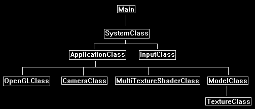

This tutorial will cover how to do multitexturing in OpenGL 4.0.
Multitexturing is the process of blending two or more different textures to create a final texture.
The equation you use to blend the two textures can differ depending on the result you are trying to achieve.
In this tutorial we will look at just combining the average pixel color of the two textures to create an evenly blended final texture.
The first texture used in this tutorial we will call the base texture which looks like the following:

The second texture we will use to combine with the first one will be called the color texture.
It looks like the following:

These two textures will be combined in the pixel shader on a pixel-by-pixel basis. The blending equation we will use will be the following:
blendColor = (basePixel * colorPixel) * 2.0;
Using that equation and the two textures we will get the following result:

Framework
The framework has been updated to include the new MultiTextureShaderClass.

We'll start the code section by first looking at the new multitexture shader which was originally based on the texture shader file with some slight changes to add a second texture.
Multitexture.vs
Although the multitexture vertex shader is based on the original texture shader, we still need to add inputNormal since our model format going forward will always have normal vectors included.
We will ignore the normal vectors as they are not needed in the shader calculations, but they still need to be there to standardize the model input.
That's also why it's good to standardize your model format early on if possible so that you can avoid re-writes in your shader code.
////////////////////////////////////////////////////////////////////////////////
// Filename: multitexture.vs
////////////////////////////////////////////////////////////////////////////////
#version 400
/////////////////////
// INPUT VARIABLES //
/////////////////////
in vec3 inputPosition;
in vec2 inputTexCoord;
in vec3 inputNormal;
//////////////////////
// OUTPUT VARIABLES //
//////////////////////
out vec2 texCoord;
///////////////////////
// UNIFORM VARIABLES //
///////////////////////
uniform mat4 worldMatrix;
uniform mat4 viewMatrix;
uniform mat4 projectionMatrix;
////////////////////////////////////////////////////////////////////////////////
// Vertex Shader
////////////////////////////////////////////////////////////////////////////////
void main(void)
{
// Calculate the position of the vertex against the world, view, and projection matrices.
gl_Position = vec4(inputPosition, 1.0f) * worldMatrix;
gl_Position = gl_Position * viewMatrix;
gl_Position = gl_Position * projectionMatrix;
// Store the texture coordinates for the pixel shader.
texCoord = inputTexCoord;
}
Multitexture.ps
////////////////////////////////////////////////////////////////////////////////
// Filename: multitexture.ps
////////////////////////////////////////////////////////////////////////////////
#version 400
/////////////////////
// INPUT VARIABLES //
/////////////////////
in vec2 texCoord;
//////////////////////
// OUTPUT VARIABLES //
//////////////////////
out vec4 outputColor;
The multitexture shader will texture in two textures.
We will assign the stone01.tga texture to shaderTexture1.
And we will assign the dirt01.tga texture to shaderTexture2.
///////////////////////
// UNIFORM VARIABLES //
///////////////////////
uniform sampler2D shaderTexture1;
uniform sampler2D shaderTexture2;
////////////////////////////////////////////////////////////////////////////////
// Pixel Shader
////////////////////////////////////////////////////////////////////////////////
void main(void)
{
vec4 color1;
vec4 color2;
vec4 blendColor;
In the pixel shader we will sample the stone and the dirt texture.
Once we have the pixel for each, we then combine them using the blending equation we discussed at the beginning of the tutorial.
We also always clamp the final result to make sure the pixel value is between 0 and 1 for all colors.
// Sample the pixel color from the textures using the sampler at this texture coordinate location.
color1 = texture(shaderTexture1, texCoord);
color2 = texture(shaderTexture2, texCoord);
// Combine the two textures together.
blendColor = color1 * color2 * 2.0;
// Return the resulting color.
outputColor = clamp(blendColor, 0.0f, 1.0f);
}
Multitextureshaderclass.h
The MultiTextureShaderClass is just the TextureShaderClass re-written to use two textures instead of one.
////////////////////////////////////////////////////////////////////////////////
// Filename: multitextureshaderclass.h
////////////////////////////////////////////////////////////////////////////////
#ifndef _MULTITEXTURESHADERCLASS_H_
#define _MULTITEXTURESHADERCLASS_H_
//////////////
// INCLUDES //
//////////////
#include <iostream>
using namespace std;
///////////////////////
// MY CLASS INCLUDES //
///////////////////////
#include "openglclass.h"
////////////////////////////////////////////////////////////////////////////////
// Class name: MultiTextureShaderClass
////////////////////////////////////////////////////////////////////////////////
class MultiTextureShaderClass
{
public:
MultiTextureShaderClass();
MultiTextureShaderClass(const MultiTextureShaderClass&);
~MultiTextureShaderClass();
bool Initialize(OpenGLClass*);
void Shutdown();
bool SetShaderParameters(float*, float*, float*);
private:
bool InitializeShader(char*, char*);
void ShutdownShader();
char* LoadShaderSourceFile(char*);
void OutputShaderErrorMessage(unsigned int, char*);
void OutputLinkerErrorMessage(unsigned int);
private:
OpenGLClass* m_OpenGLPtr;
unsigned int m_vertexShader;
unsigned int m_fragmentShader;
unsigned int m_shaderProgram;
};
#endif
Multitextureshaderclass.cpp
////////////////////////////////////////////////////////////////////////////////
// Filename: multitextureshaderclass.cpp
////////////////////////////////////////////////////////////////////////////////
#include "multitextureshaderclass.h"
MultiTextureShaderClass::MultiTextureShaderClass()
{
m_OpenGLPtr = 0;
}
MultiTextureShaderClass::MultiTextureShaderClass(const MultiTextureShaderClass& other)
{
}
MultiTextureShaderClass::~MultiTextureShaderClass()
{
}
bool MultiTextureShaderClass::Initialize(OpenGLClass* OpenGL)
{
char vsFilename[128];
char psFilename[128];
bool result;
// Store the pointer to the OpenGL object.
m_OpenGLPtr = OpenGL;
// Set the location and names of the shader files.
strcpy(vsFilename, "../Engine/multitexture.vs");
strcpy(psFilename, "../Engine/multitexture.ps");
// Initialize the vertex and pixel shaders.
result = InitializeShader(vsFilename, psFilename);
if(!result)
{
return false;
}
return true;
}
void MultiTextureShaderClass::Shutdown()
{
// Shutdown the shader.
ShutdownShader();
// Release the pointer to the OpenGL object.
m_OpenGLPtr = 0;
return;
}
bool MultiTextureShaderClass::InitializeShader(char* vsFilename, char* fsFilename)
{
const char* vertexShaderBuffer;
const char* fragmentShaderBuffer;
int status;
// Load the vertex shader source file into a text buffer.
vertexShaderBuffer = LoadShaderSourceFile(vsFilename);
if(!vertexShaderBuffer)
{
return false;
}
// Load the fragment shader source file into a text buffer.
fragmentShaderBuffer = LoadShaderSourceFile(fsFilename);
if(!fragmentShaderBuffer)
{
return false;
}
// Create a vertex and fragment shader object.
m_vertexShader = m_OpenGLPtr->glCreateShader(GL_VERTEX_SHADER);
m_fragmentShader = m_OpenGLPtr->glCreateShader(GL_FRAGMENT_SHADER);
// Copy the shader source code strings into the vertex and fragment shader objects.
m_OpenGLPtr->glShaderSource(m_vertexShader, 1, &vertexShaderBuffer, NULL);
m_OpenGLPtr->glShaderSource(m_fragmentShader, 1, &fragmentShaderBuffer, NULL);
// Release the vertex and fragment shader buffers.
delete [] vertexShaderBuffer;
vertexShaderBuffer = 0;
delete [] fragmentShaderBuffer;
fragmentShaderBuffer = 0;
// Compile the shaders.
m_OpenGLPtr->glCompileShader(m_vertexShader);
m_OpenGLPtr->glCompileShader(m_fragmentShader);
// Check to see if the vertex shader compiled successfully.
m_OpenGLPtr->glGetShaderiv(m_vertexShader, GL_COMPILE_STATUS, &status);
if(status != 1)
{
// If it did not compile then write the syntax error message out to a text file for review.
OutputShaderErrorMessage(m_vertexShader, vsFilename);
return false;
}
// Check to see if the fragment shader compiled successfully.
m_OpenGLPtr->glGetShaderiv(m_fragmentShader, GL_COMPILE_STATUS, &status);
if(status != 1)
{
// If it did not compile then write the syntax error message out to a text file for review.
OutputShaderErrorMessage(m_fragmentShader, fsFilename);
return false;
}
// Create a shader program object.
m_shaderProgram = m_OpenGLPtr->glCreateProgram();
// Attach the vertex and fragment shader to the program object.
m_OpenGLPtr->glAttachShader(m_shaderProgram, m_vertexShader);
m_OpenGLPtr->glAttachShader(m_shaderProgram, m_fragmentShader);
// Bind the shader input variables.
m_OpenGLPtr->glBindAttribLocation(m_shaderProgram, 0, "inputPosition");
m_OpenGLPtr->glBindAttribLocation(m_shaderProgram, 1, "inputTexCoord");
m_OpenGLPtr->glBindAttribLocation(m_shaderProgram, 2, "inputNormal");
// Link the shader program.
m_OpenGLPtr->glLinkProgram(m_shaderProgram);
// Check the status of the link.
m_OpenGLPtr->glGetProgramiv(m_shaderProgram, GL_LINK_STATUS, &status);
if(status != 1)
{
// If it did not link then write the syntax error message out to a text file for review.
OutputLinkerErrorMessage(m_shaderProgram);
return false;
}
return true;
}
void MultiTextureShaderClass::ShutdownShader()
{
// Detach the vertex and fragment shaders from the program.
m_OpenGLPtr->glDetachShader(m_shaderProgram, m_vertexShader);
m_OpenGLPtr->glDetachShader(m_shaderProgram, m_fragmentShader);
// Delete the vertex and fragment shaders.
m_OpenGLPtr->glDeleteShader(m_vertexShader);
m_OpenGLPtr->glDeleteShader(m_fragmentShader);
// Delete the shader program.
m_OpenGLPtr->glDeleteProgram(m_shaderProgram);
return;
}
char* MultiTextureShaderClass::LoadShaderSourceFile(char* filename)
{
FILE* filePtr;
char* buffer;
long fileSize, count;
int error;
// Open the shader file for reading in text modee.
filePtr = fopen(filename, "r");
if(filePtr == NULL)
{
return 0;
}
// Go to the end of the file and get the size of the file.
fseek(filePtr, 0, SEEK_END);
fileSize = ftell(filePtr);
// Initialize the buffer to read the shader source file into, adding 1 for an extra null terminator.
buffer = new char[fileSize + 1];
// Return the file pointer back to the beginning of the file.
fseek(filePtr, 0, SEEK_SET);
// Read the shader text file into the buffer.
count = fread(buffer, 1, fileSize, filePtr);
if(count != fileSize)
{
return 0;
}
// Close the file.
error = fclose(filePtr);
if(error != 0)
{
return 0;
}
// Null terminate the buffer.
buffer[fileSize] = '\0';
return buffer;
}
void MultiTextureShaderClass::OutputShaderErrorMessage(unsigned int shaderId, char* shaderFilename)
{
long count;
int logSize, error;
char* infoLog;
FILE* filePtr;
// Get the size of the string containing the information log for the failed shader compilation message.
m_OpenGLPtr->glGetShaderiv(shaderId, GL_INFO_LOG_LENGTH, &logSize);
// Increment the size by one to handle also the null terminator.
logSize++;
// Create a char buffer to hold the info log.
infoLog = new char[logSize];
// Now retrieve the info log.
m_OpenGLPtr->glGetShaderInfoLog(shaderId, logSize, NULL, infoLog);
// Open a text file to write the error message to.
filePtr = fopen("shader-error.txt", "w");
if(filePtr == NULL)
{
cout << "Error opening shader error message output file." << endl;
return;
}
// Write out the error message.
count = fwrite(infoLog, sizeof(char), logSize, filePtr);
if(count != logSize)
{
cout << "Error writing shader error message output file." << endl;
return;
}
// Close the file.
error = fclose(filePtr);
if(error != 0)
{
cout << "Error closing shader error message output file." << endl;
return;
}
// Notify the user to check the text file for compile errors.
cout << "Error compiling shader. Check shader-error.txt for error message. Shader filename: " << shaderFilename << endl;
return;
}
void MultiTextureShaderClass::OutputLinkerErrorMessage(unsigned int programId)
{
long count;
FILE* filePtr;
int logSize, error;
char* infoLog;
// Get the size of the string containing the information log for the failed shader compilation message.
m_OpenGLPtr->glGetProgramiv(programId, GL_INFO_LOG_LENGTH, &logSize);
// Increment the size by one to handle also the null terminator.
logSize++;
// Create a char buffer to hold the info log.
infoLog = new char[logSize];
// Now retrieve the info log.
m_OpenGLPtr->glGetProgramInfoLog(programId, logSize, NULL, infoLog);
// Open a file to write the error message to.
filePtr = fopen("linker-error.txt", "w");
if(filePtr == NULL)
{
cout << "Error opening linker error message output file." << endl;
return;
}
// Write out the error message.
count = fwrite(infoLog, sizeof(char), logSize, filePtr);
if(count != logSize)
{
cout << "Error writing linker error message output file." << endl;
return;
}
// Close the file.
error = fclose(filePtr);
if(error != 0)
{
cout << "Error closing linker error message output file." << endl;
return;
}
// Pop a message up on the screen to notify the user to check the text file for linker errors.
cout << "Error linking shader program. Check linker-error.txt for message." << endl;
return;
}
bool MultiTextureShaderClass::SetShaderParameters(float* worldMatrix, float* viewMatrix, float* projectionMatrix)
{
float tpWorldMatrix[16], tpViewMatrix[16], tpProjectionMatrix[16];
int location;
// Transpose the matrices to prepare them for the shader.
m_OpenGLPtr->MatrixTranspose(tpWorldMatrix, worldMatrix);
m_OpenGLPtr->MatrixTranspose(tpViewMatrix, viewMatrix);
m_OpenGLPtr->MatrixTranspose(tpProjectionMatrix, projectionMatrix);
// Install the shader program as part of the current rendering state.
m_OpenGLPtr->glUseProgram(m_shaderProgram);
// Set the world matrix in the vertex shader.
location = m_OpenGLPtr->glGetUniformLocation(m_shaderProgram, "worldMatrix");
if(location == -1)
{
cout << "World matrix not set." << endl;
}
m_OpenGLPtr ->glUniformMatrix4fv(location, 1, false, tpWorldMatrix);
// Set the view matrix in the vertex shader.
location = m_OpenGLPtr->glGetUniformLocation(m_shaderProgram, "viewMatrix");
if(location == -1)
{
cout << "View matrix not set." << endl;
}
m_OpenGLPtr->glUniformMatrix4fv(location, 1, false, tpViewMatrix);
// Set the projection matrix in the vertex shader.
location = m_OpenGLPtr->glGetUniformLocation(m_shaderProgram, "projectionMatrix");
if(location == -1)
{
cout << "Projection matrix not set." << endl;
}
m_OpenGLPtr->glUniformMatrix4fv(location, 1, false, tpProjectionMatrix);
In the SetShaderParameters function you will see we set two textures.
We use glGetUniformLocation to get the location of each of the shaderTexture input variables in the pixel shader.
And then we use glUniform1i to set which texture unit will be used by each of the texture input variables in the pixel shader.
Here we set shaderTexture1 to be texture unit 0, and we will assign the stone01.tga texture to it when we render the model.
And we set shaderTexture2 to be texture unit 1, and we will assign the dirt01.tga texture to it when the model is rendered.
// Set the first texture in the pixel shader to use the data from the first texture unit.
location = m_OpenGLPtr->glGetUniformLocation(m_shaderProgram, "shaderTexture1");
if(location == -1)
{
cout << "Shader texture 1 not set." << endl;
}
m_OpenGLPtr->glUniform1i(location, 0);
// Set the second texture in the pixel shader to use the data from the second texture unit.
location = m_OpenGLPtr->glGetUniformLocation(m_shaderProgram, "shaderTexture2");
if(location == -1)
{
cout << "Shader texture 2 not set." << endl;
}
m_OpenGLPtr->glUniform1i(location, 1);
return true;
}
Modelclass.h
The ModelClass has been modified to load and use two textures now instead of just one.
////////////////////////////////////////////////////////////////////////////////
// Filename: modelclass.h
////////////////////////////////////////////////////////////////////////////////
#ifndef _MODELCLASS_H_
#define _MODELCLASS_H_
//////////////
// INCLUDES //
//////////////
#include <fstream>
using namespace std;
///////////////////////
// MY CLASS INCLUDES //
///////////////////////
#include "textureclass.h"
////////////////////////////////////////////////////////////////////////////////
// Class Name: ModelClass
////////////////////////////////////////////////////////////////////////////////
class ModelClass
{
private:
struct VertexType
{
float x, y, z;
float tu, tv;
float nx, ny, nz;
};
struct ModelType
{
float x, y, z;
float tu, tv;
float nx, ny, nz;
};
public:
ModelClass();
ModelClass(const ModelClass&);
~ModelClass();
bool Initialize(OpenGLClass*, char*, char*, bool, char*, bool);
void Shutdown();
void Render();
void SetTexture1(unsigned int);
void SetTexture2(unsigned int);
private:
bool InitializeBuffers();
void ShutdownBuffers();
void RenderBuffers();
bool LoadTextures(char*, bool, char*, bool);
void ReleaseTextures();
bool LoadModel(char*);
void ReleaseModel();
private:
OpenGLClass* m_OpenGLPtr;
int m_vertexCount, m_indexCount;
unsigned int m_vertexArrayId, m_vertexBufferId, m_indexBufferId;
TextureClass* m_Textures;
ModelType* m_model;
};
#endif
Modelclass.cpp
////////////////////////////////////////////////////////////////////////////////
// Filename: modelclass.cpp
////////////////////////////////////////////////////////////////////////////////
#include "modelclass.h"
ModelClass::ModelClass()
{
m_OpenGLPtr = 0;
m_Textures = 0;
m_model = 0;
}
ModelClass::ModelClass(const ModelClass& other)
{
}
ModelClass::~ModelClass()
{
}
The initialize function now takes in the name of two textures for the model to use.
bool ModelClass::Initialize(OpenGLClass* OpenGL, char* modelFilename, char* textureFilename1, bool wrap1, char* textureFilename2, bool wrap2)
{
bool result;
// Store a pointer to the OpenGL object.
m_OpenGLPtr = OpenGL;
// Load in the model data.
result = LoadModel(modelFilename);
if(!result)
{
return false;
}
// Initialize the vertex and index buffer that hold the geometry for the triangle.
result = InitializeBuffers();
if(!result)
{
return false;
}
We now call the LoadTextures function which will load two textures.
// Load the textures for this model.
result = LoadTextures(textureFilename1, wrap1, textureFilename2, wrap2);
if(!result)
{
return false;
}
return true;
}
void ModelClass::Shutdown()
{
The Shutdown function calls the ReleaseTextures function which will release both textures that were loaded.
// Release the textures used for this model.
ReleaseTextures();
// Release the vertex and index buffers.
ShutdownBuffers();
// Release the model data.
ReleaseModel();
// Release the pointer to the OpenGL object.
m_OpenGLPtr = 0;
return;
}
void ModelClass::Render()
{
// Put the vertex and index buffers on the graphics pipeline to prepare them for drawing.
RenderBuffers();
return;
}
bool ModelClass::InitializeBuffers()
{
VertexType* vertices;
unsigned int* indices;
int i;
// Create the vertex array.
vertices = new VertexType[m_vertexCount];
// Create the index array.
indices = new unsigned int[m_indexCount];
// Load the vertex array and index array with data.
for(i=0; i<m_vertexCount; i++)
{
vertices[i].x = m_model[i].x;
vertices[i].y = m_model[i].y;
vertices[i].z = m_model[i].z;
vertices[i].tu = m_model[i].tu;
vertices[i].tv = m_model[i].tv;
vertices[i].nx = m_model[i].nx;
vertices[i].ny = m_model[i].ny;
vertices[i].nz = m_model[i].nz;
indices[i] = i;
}
// Allocate an OpenGL vertex array object.
m_OpenGLPtr->glGenVertexArrays(1, &m_vertexArrayId);
// Bind the vertex array object to store all the buffers and vertex attributes we create here.
m_OpenGLPtr->glBindVertexArray(m_vertexArrayId);
// Generate an ID for the vertex buffer.
m_OpenGLPtr->glGenBuffers(1, &m_vertexBufferId);
// Bind the vertex buffer and load the vertex (position and color) data into the vertex buffer.
m_OpenGLPtr->glBindBuffer(GL_ARRAY_BUFFER, m_vertexBufferId);
m_OpenGLPtr->glBufferData(GL_ARRAY_BUFFER, m_vertexCount * sizeof(VertexType), vertices, GL_STATIC_DRAW);
// Enable the two vertex array attributes.
m_OpenGLPtr->glEnableVertexAttribArray(0); // Vertex position.
m_OpenGLPtr->glEnableVertexAttribArray(1); // Texture coordinates.
m_OpenGLPtr->glEnableVertexAttribArray(2); // Normals
// Specify the location and format of the position portion of the vertex buffer.
m_OpenGLPtr->glVertexAttribPointer(0, 3, GL_FLOAT, false, sizeof(VertexType), 0);
// Specify the location and format of the texture coordinates portion of the vertex buffer.
m_OpenGLPtr->glVertexAttribPointer(1, 2, GL_FLOAT, false, sizeof(VertexType), (unsigned char*)NULL + (3 * sizeof(float)));
// Specify the location and format of the normal vector portion of the vertex buffer.
m_OpenGLPtr->glVertexAttribPointer(2, 3, GL_FLOAT, false, sizeof(VertexType), (unsigned char*)NULL + (5 * sizeof(float)));
// Generate an ID for the index buffer.
m_OpenGLPtr->glGenBuffers(1, &m_indexBufferId);
// Bind the index buffer and load the index data into it.
m_OpenGLPtr->glBindBuffer(GL_ELEMENT_ARRAY_BUFFER, m_indexBufferId);
m_OpenGLPtr->glBufferData(GL_ELEMENT_ARRAY_BUFFER, m_indexCount* sizeof(unsigned int), indices, GL_STATIC_DRAW);
// Now that the buffers have been loaded we can release the array data.
delete [] vertices;
vertices = 0;
delete [] indices;
indices = 0;
return true;
}
void ModelClass::ShutdownBuffers()
{
// Release the vertex array object.
m_OpenGLPtr->glBindVertexArray(0);
m_OpenGLPtr->glDeleteVertexArrays(1, &m_vertexArrayId);
// Release the vertex buffer.
m_OpenGLPtr->glBindBuffer(GL_ARRAY_BUFFER, 0);
m_OpenGLPtr->glDeleteBuffers(1, &m_vertexBufferId);
// Release the index buffer.
m_OpenGLPtr->glBindBuffer(GL_ELEMENT_ARRAY_BUFFER, 0);
m_OpenGLPtr->glDeleteBuffers(1, &m_indexBufferId);
return;
}
void ModelClass::RenderBuffers()
{
// Bind the vertex array object that stored all the information about the vertex and index buffers.
m_OpenGLPtr->glBindVertexArray(m_vertexArrayId);
// Render the vertex buffer using the index buffer.
glDrawElements(GL_TRIANGLES, m_indexCount, GL_UNSIGNED_INT, 0);
return;
}
The LoadTextures function takes as input two file names and wraps for the two different textures.
It will then load both textures.
bool ModelClass::LoadTextures(char* textureFilename1, bool wrap1, char* textureFilename2, bool wrap2)
{
bool result;
// Create and initialize the texture objects.
m_Textures = new TextureClass[2];
result = m_Textures[0].Initialize(m_OpenGLPtr, textureFilename1, wrap1);
if(!result)
{
return false;
}
result = m_Textures[1].Initialize(m_OpenGLPtr, textureFilename2, wrap2);
if(!result)
{
return false;
}
return true;
}
The ReleaseTextures function will release the two texture objects that were created.
void ModelClass::ReleaseTextures()
{
// Release the texture objects.
if(m_Textures)
{
m_Textures[0].Shutdown();
m_Textures[1].Shutdown();
delete [] m_Textures;
m_Textures = 0;
}
return;
}
The SetTexture1 and SetTexture2 functions allow us to set the two textures and also specify which texture unit to use for each.
void ModelClass::SetTexture1(unsigned int textureUnit)
{
// Set the first texture for the model.
m_Textures[0].SetTexture(m_OpenGLPtr, textureUnit);
return;
}
void ModelClass::SetTexture2(unsigned int textureUnit)
{
// Set the second texture for the model.
m_Textures[1].SetTexture(m_OpenGLPtr, textureUnit);
return;
}
bool ModelClass::LoadModel(char* filename)
{
ifstream fin;
char input;
int i;
// Open the model file.
fin.open(filename);
// If it could not open the file then exit.
if(fin.fail())
{
return false;
}
// Read up to the value of vertex count.
fin.get(input);
while(input != ':')
{
fin.get(input);
}
// Read in the vertex count.
fin >> m_vertexCount;
// Set the number of indices to be the same as the vertex count.
m_indexCount = m_vertexCount;
// Create the model using the vertex count that was read in.
m_model = new ModelType[m_vertexCount];
// Read up to the beginning of the data.
fin.get(input);
while(input != ':')
{
fin.get(input);
}
fin.get(input);
fin.get(input);
// Read in the vertex data.
for(i=0; i<m_vertexCount; i++)
{
fin >> m_model[i].x >> m_model[i].y >> m_model[i].z;
fin >> m_model[i].tu >> m_model[i].tv;
fin >> m_model[i].nx >> m_model[i].ny >> m_model[i].nz;
// Invert the V coordinate to match the OpenGL texture coordinate system.
m_model[i].tv = 1.0f - m_model[i].tv;
}
// Close the model file.
fin.close();
return true;
}
void ModelClass::ReleaseModel()
{
if(m_model)
{
delete [] m_model;
m_model = 0;
}
return;
}
Applicationclass.h
We have added the new MultiTextureShaderClass to the ApplicationClass.
////////////////////////////////////////////////////////////////////////////////
// Filename: applicationclass.h
////////////////////////////////////////////////////////////////////////////////
#ifndef _APPLICATIONCLASS_H_
#define _APPLICATIONCLASS_H_
/////////////
// GLOBALS //
/////////////
const bool FULL_SCREEN = false;
const bool VSYNC_ENABLED = true;
const float SCREEN_NEAR = 0.3f;
const float SCREEN_DEPTH = 1000.0f;
///////////////////////
// MY CLASS INCLUDES //
///////////////////////
#include "inputclass.h"
#include "openglclass.h"
#include "cameraclass.h"
#include "multitextureshaderclass.h"
#include "modelclass.h"
////////////////////////////////////////////////////////////////////////////////
// Class Name: ApplicationClass
////////////////////////////////////////////////////////////////////////////////
class ApplicationClass
{
public:
ApplicationClass();
ApplicationClass(const ApplicationClass&);
~ApplicationClass();
bool Initialize(Display*, Window, int, int);
void Shutdown();
bool Frame(InputClass*);
private:
bool Render();
private:
OpenGLClass* m_OpenGL;
CameraClass* m_Camera;
MultiTextureShaderClass* m_MultiTextureShader;
ModelClass* m_Model;
};
#endif
Applicationclass.cpp
////////////////////////////////////////////////////////////////////////////////
// Filename: applicationclass.cpp
////////////////////////////////////////////////////////////////////////////////
#include "applicationclass.h"
ApplicationClass::ApplicationClass()
{
m_OpenGL = 0;
m_Camera = 0;
m_MultiTextureShader = 0;
m_Model = 0;
}
ApplicationClass::ApplicationClass(const ApplicationClass& other)
{
}
ApplicationClass::~ApplicationClass()
{
}
bool ApplicationClass::Initialize(Display* display, Window win, int screenWidth, int screenHeight)
{
char modelFilename[128], textureFilename1[128], textureFilename2[128];
bool result;
// Create and initialize the OpenGL object.
m_OpenGL = new OpenGLClass;
result = m_OpenGL->Initialize(display, win, screenWidth, screenHeight, SCREEN_NEAR, SCREEN_DEPTH, VSYNC_ENABLED);
if(!result)
{
cout << "Error: Could not initialize the OpenGL object." << endl;
return false;
}
// Create and initialize the camera object.
m_Camera = new CameraClass;
m_Camera->SetPosition(0.0f, 0.0f, -5.0f);
m_Camera->Render();
We create and initialize the new MultiTextureShaderClass object here.
// Create and initialize the multitexture shader object.
m_MultiTextureShader = new MultiTextureShaderClass;
result = m_MultiTextureShader->Initialize(m_OpenGL);
if(!result)
{
cout << "Error: Could not initialize the multitexture shader object." << endl;
return false;
}
For the model we will use just a simple square model.
For the two textures we will use stone01.tga and dirt01.tga.
// Set the file name of the model.
strcpy(modelFilename, "../Engine/data/square.txt");
// Set the file name of the textures.
strcpy(textureFilename1, "../Engine/data/stone01.tga");
strcpy(textureFilename2, "../Engine/data/dirt01.tga");
// Create and initialize the model object.
m_Model = new ModelClass;
result = m_Model->Initialize(m_OpenGL, modelFilename, textureFilename1, true, textureFilename2, true);
if(!result)
{
cout << "Error: Could not initialize the model object." << endl;
return false;
}
return true;
}
The Shutdown function releases the new MultiTextureShaderClass object.
void ApplicationClass::Shutdown()
{
// Release the model object.
if(m_Model)
{
m_Model->Shutdown();
delete m_Model;
m_Model = 0;
}
// Release the multitexture shader object.
if(m_MultiTextureShader)
{
m_MultiTextureShader->Shutdown();
delete m_MultiTextureShader;
m_MultiTextureShader = 0;
}
// Release the camera object.
if(m_Camera)
{
delete m_Camera;
m_Camera = 0;
}
// Release the OpenGL object.
if(m_OpenGL)
{
m_OpenGL->Shutdown();
delete m_OpenGL;
m_OpenGL = 0;
}
return;
}
bool ApplicationClass::Frame(InputClass* Input)
{
bool result;
// Check if the escape key has been pressed, if so quit.
if(Input->IsEscapePressed() == true)
{
return false;
}
// Render the graphics scene.
result = Render();
if(!result)
{
return false;
}
return true;
}
bool ApplicationClass::Render()
{
float worldMatrix[16], viewMatrix[16], projectionMatrix[16];
bool result;
// Clear the buffers to begin the scene.
m_OpenGL->BeginScene(0.0f, 0.0f, 0.0f, 1.0f);
// Get the world, view, and projection matrices from the opengl and camera objects.
m_OpenGL->GetWorldMatrix(worldMatrix);
m_Camera->GetViewMatrix(viewMatrix);
m_OpenGL->GetProjectionMatrix(projectionMatrix);
We use the new MultiTextureShaderClass object to render the square model.
Also the model will set the two textures it uses into texture unit 0 for the first texture, and texture unit 1 for the second texture.
// Set the multitexture shader as active and set its parameters.
result = m_MultiTextureShader->SetShaderParameters(worldMatrix, viewMatrix, projectionMatrix);
if(!result)
{
return false;
}
// Set the two textures for the model in the pixel shader in texture unit 0 and 1.
m_Model->SetTexture1(0);
m_Model->SetTexture2(1);
// Render the model using the multitexture shader.
m_Model->Render();
// Present the rendered scene to the screen.
m_OpenGL->EndScene();
return true;
}
Summary
We now have a shader that will combine two textures evenly.
To Do Exercises
1. Recompile the code and run the program to see the resulting image. Press escape to quit.
2. Replace the two textures with two new ones to see the results.
3. Try some different blending operations in the pixel shader on the two textures.
4. Add a third texture.
Source Code
Source Code and Data Files: gl4linuxtut17_src.tar.gz